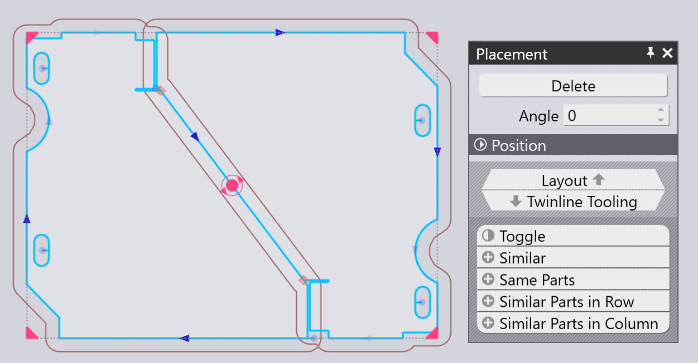

Πίνακας τοποθέτησης
Ένα τεμάχιο που έχει προστεθεί (ή οποιοδήποτε υφιστάμενο στη διάταξη τεμάχιο) μπορεί να μετακινηθεί, να περιστραφεί ή να επαναληφθεί με τον Πίνακα τοποθέτησης, ο οποίος εμφανίζεται όταν κάνετε κλικ στο τεμάχιο:

-
Οι ρυθμίσεις Left,Bottom, Right και Top είναι τα όρια του πλαισίου οριοθέτησης του τεμαχίου και μπορούν να χρησιμοποιηθούν για την ακριβή τοποθέτηση του τεμαχίου.
-
Μπορείτε επίσης να κάνετε κλικ στην κόκκινη κυκλική λαβή στο κέντρο του τεμαχίου και αρχίστε να το σύρετε για να το τοποθετήσετε στη μεταλλική πλάκα. Καθώς περιφέρετε το τεμάχιο, το TecZone Laser θα προσθέσει οδηγίες κουμπώματος για να σας βοηθήσει να τοποθετήσετε το τεμάχιο με ακριβές διάκενο (πλάτος γέφυρας) στα παρακείμενα τεμάχια. Ενώ τοποθετείται το τεμάχιο, σχεδιάζεται επίσης ένα περίγραμμα γύρω από το τεμάχιο, μετατοπισμένο από το πραγματικό περίγραμμα του τεμαχίου κατά το πλάτος της γέφυρας.
-
Η ρύθμιση Angle μπορεί να χρησιμοποιηθεί για την περιστροφή του τεμαχίου ώστε να είναι δυνατή η δοκιμή των προσανατολισμών. Όταν σύρετε το τεμάχιο με τη λαβή συρσίματος, μπορείτε επίσης να κρατήσετε πατημένο το πλήκτρο Ctrl και να περιστρέψετε τον τροχό του ποντικιού για να περιστρέψτε το τεμάχιο διαδραστικά.
-
Χρησιμοποιήστε Ctrl+Κλικ για να δημιουργήσετε ένα αντίγραφο του τεμαχίου και, στη συνέχεια, αρχίστε να σύρετε αυτό το αντίγραφο.
-
Χρησιμοποιήστε Alt+Κλικ για να κατοπτρίσετε το τεμάχιο κατακόρυφα και Alt+Shift+Κλικ για το κατοπτρίσετε οριζόντια.
-
Υπάρχουν αρκετοί Επιλογείς στο κάτω μέρος αυτού του πίνακα:
-
Κάνετε κλικ στο Toggle για να αποεπιλέξετε τα επιλεγμένα τεμάχια και επιλέξτε όλα τα άλλα.
-
Κάνετε κλικ στο Similar για να επιλέξετε όλα τα αντίγραφα του ίδιου τεμαχίου στην ίδια γωνία.
-
Κάνετε κλικ στο Same Parts για να επιλέξετε όλα τα αντίγραφα του ίδιου τεμαχίου (ανεξάρτητα από τη γωνία περιστροφής).
-
Κάνετε κλικ Similar Parts in Row για να επιλέξετε όλα τα τεμάχια στην ίδια γωνία και στην ίδια οριζόντια θέση.
-
Κάνετε κλικ στο Similar Parts in Column για να επιλέξετε όλα τα τεμάχια στην ίδια γωνία και στην ίδια κατακόρυφη θέση.
-
Τοποθέτηση διπλής γραμμής (κοινή γραμμή)
Χρησιμοποιώντας το Shift*Κλικ* για να αρχίσετε να σύρετε ένα τεμάχιο, η τοποθέτηση θα τεθεί σε λειτουργία _διπλής γραμμής_ - όταν σύρετε δύο παράλληλες ακμές σε μικρή μεταξύ τους απόσταση, το {CUTAPP} θα τις κουμπώσει μαζί με ακριβώς σε μια απόσταση πλάτους αρμού κοπής έτσι ώστε να μπορούν και οι δύο να κοπούν ως μία κοινή γραμμή. Εδώ παρατίθεται ένα παράδειγμα ενός τέτοιου κουμπώματος που προκύπτει καθώς σύρουμε ένα τεμάχιο με kbd:[Shift]Κλικ:

Όταν απελευθερωθεί το ποντίκι, τα δύο τεμάχια συγκροτούν μια ενιαία ομάδα διπλής γραμμής όπου η κοινή γραμμή κόβετε μία μόνο φορά (μπορείτε να δείτε ότι υπάρχει μόνο ένα βέλος γραμμής κοπής στη διαγώνια γραμμή στο μέσο).

Επαναλαμβανόμενα και ομαδοποιημένα τεμάχια

Μπορείτε να επιλέξετε ένα τεμάχιο και στη συνέχεια να χρησιμοποιήσετε τις τέσσερις λαβές στις γωνίες του πλαισίου οριοθέτησης για να επαναλάβετε το τεμάχιο. Αυτό μπορεί να γίνει ακόμη και με μια ομάδα τεμαχίων που έχουν επιλεγεί. Εδώ παρατίθεται ένα παράδειγμα στο οποίο αρχίζουμε με επιλεγμένα δύο παρακείμενα τεμάχια και κάνουμε κλικ στη γωνιακή λαβή για να αρχίσουμε να το σύρουμε προς τα έξω:

Όταν διαθέτετε τον αναγκαίο αριθμό σειρών και στηλών, μπορείτε να κάνετε κλικ για να εισάγετε τα επαναλαμβανόμενα τεμάχια:

Επανάληψη με διπλή γραμμή
Εάν ξεκινήσετε με ένα μόνο τεμάχιο ή με μια μονάδα πολλαπλών τεμαχίων διπλής γραμμής, μπορείτε κρατήστε πατημένο το Shift ενώ σύρετε τη γωνία για να επαναλάβετε τη διπλή γραμμή:

Ομαδοποίηση
Κάθε φορά που έχετε επιλέξει πολλά τεμάχια, μπορείτε να κάνετε κλικ στο κουμπί Group για να τα ομαδοποιήσετε ως μονάδα. Τότε, όλες οι διαδικασίες όπως η μετακίνηση, η περιστροφή, η κατόπτριση και η επανάληψη θα λειτουργήσουν σε αυτήν Group. Όταν είναι επιλεγμένη μια ομάδα, μπορείτε να κάνετε κλικ στο Ungroup για καταργήσετε αυτήν την ομαδοποίηση και να τα αντιμετωπίσετε και πάλι ως μεμονωμένα τεμάχια.
Επεξεργασία εξοπλισμού τεμαχίου
Το κουμπί Edit Tooling του πίνακα Τοποθέτησης μπορεί να χρησιμοποιείται για τη ρύθμιση του εξοπλισμού κοπής λέιζερ ενός ή περισσότερων επιλεγμένων τεμαχίων απευθείας στο πλαίσιο της διάταξης. Αρχικά, επιλέξτε μια ομάδα παρόμοιων τεμαχίων για τα οποία θέλετε για να επεξεργαστείτε τον εξοπλισμό για:

Όλα τα άλλα τεμάχια προβάλλονται με γκρι χρώμα, το TecZone Laser μεγεθύνει τα επιλεγμένα τεμάχια και εσείς μπορείτε στη συνέχεια να επεξεργαστείτε τον εξοπλισμό του τεμαχίου. Σε αυτό το παράδειγμα, ας υποθέσουμε ότι θέλουμε να προσθέσουμε μια διαδικασία Scrap cutting σε μία από τις κυκλικές οπές για τον τεμαχισμό αυτού του θραύσματος συμπίεσης:

Εάν κάνετε μια επεξεργασία (όπως την προσθήκη της κοπής αχρήστων), μπορείτε να δείτε ότι η επεξεργασία εφαρμόζεται σε όλα τα επιλεγμένα τεμάχια. Κάνοντας κλικ κάπου μακριά από την ομάδα των τεμαχίων που υποβάλλονται σε επεξεργασία, αυτά αποκαθίστανται στην πλήρη διάταξη. Μπορείτε να δείτε ότι στα τρία επιλεγμένα τεμάχια έχει προστεθεί ο εξοπλισμός κοπής αχρήστων που έχει προστεθεί σε αυτά.